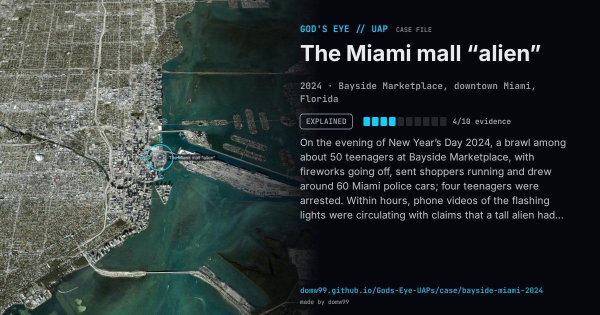

The Miami mall “alien”

On the evening of New Year’s Day 2024, a brawl among about 50 teenagers at Bayside Marketplace, with fireworks going off, sent shoppers running and drew around 60 Miami police cars; four teenagers were arrested. Within hours, phone videos of the flashing lights were circulating with claims that a tall alien had been seen, that the mall had been sealed off and that airports had closed. William Shatner posted “So apparently space aliens visited a mall in Miami?” The police had to issue a statement that nothing was being withheld and there had been no aliens. It is a clear modern example of how a burst of police activity and a blurry clip become a UFO story overnight.
Explanation
A fight among a large group of teenagers, with fireworks that some shoppers took for gunfire, brought dozens of police cars. The “alien” in the viral clips was, police said, the shadow of a person walking in front of the patrol cars. The Miami Police Department said: “No aliens, UFOs, or ET’s. No airports were closed. No power outages.”
What was seen
Shape: A tall, shadowy figure between police cars in phone videos
Witnesses: Shoppers, Miami police, and millions of people online
Duration: An evening; the rumour ran for days
Sources
- NBC — “No aliens, UFOs, or ETs”: Miami police clear up speculation after viral brawl (2024)
- WPLG Local 10 — Miami police officers guffaw at gray alien rumor (2024)